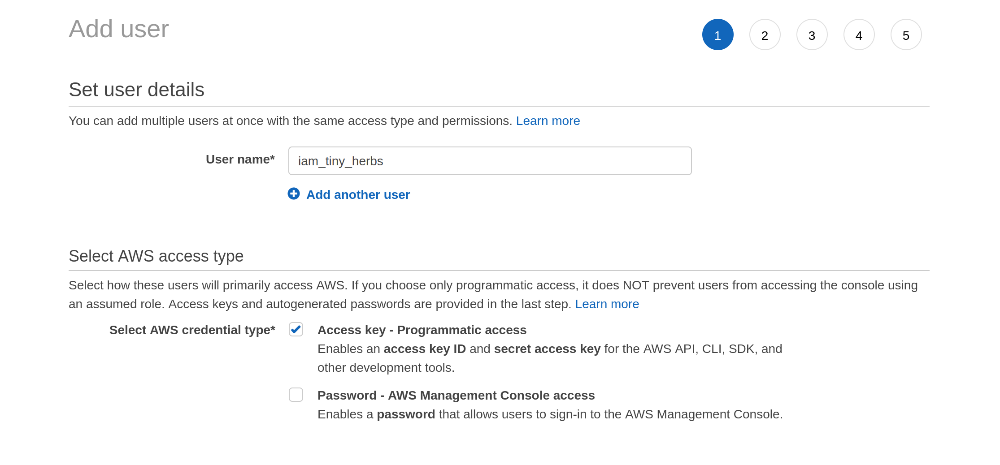

![]()
library(dplyr)
library(readr)
library(purrr)
library(stringr)
library(tibble)
library(magick)
library(aws.s3)I have a shameful confession to make, one that may shock and surprise you. Although I am an R user, data scientist, and developer of many years experience, I’ve never used Amazon Web Services.
It’s hard to believe, I know, but I’ve never spun up a virtual machine on “Amazon EC2” (…whatever that is), I don’t know what “AWS Lambda” is, and the only thing I know about “Amazon S3” is that fancy data science people use it to store data. Or something along those lines. Honestly, I really haven’t been paying attention. Every time people start talking about it my eyes glaze over and my impostor syndrome arrives to berate me. A true data scientist is born knowing how to spin up EC2 instances, and if baby doesn’t post her drawings on S3 then she’s already falling behind, etc etc. It’s terribly stressful.
My dark and terrible personal tragedy notwithstanding,1 I suspect my situation is not entirely uncommon. Back in my academic days, I knew very few people who used Amazon Web Services (a.k.a. AWS) for much of anything. It wasn’t needed, so it wasn’t knowledge that people acquired. Now that I’m working in an industry setting I’m finding that it’s so widely used that it’s almost assumed knowledge. Everyone knows this stuff, so there’s not a lot said about why you might care, or how to get started using these tools if you decide that you do care.
Today I decided to do something about this, starting by teaching myself how to use Amazon’s Simple Storage Service (a.k.a S3). With the help of the aws.s3 package authored by Thomas Leeper and currently maintained by Simon Urbanek, it’s surprisingly easy to do.
In this post I’ll walk you through the process.

What is S3 and why do I care?
Let’s get started. As with everything else in life, the place to start is asking yourself if you even care. I mean, if we don’t care what S3 is or what it does, why even bother? Just let your eyes glaze over as the nerd keeps talking and wonder if there’s anything good on TV…
Still here? Cool.
From the user perspective, Amazon’s “Simple Storage Service” isn’t particularly complicated. It’s just a remote storage system that you can dump files into, kind of like a programmable Dropbox. Each file (and its accompanying metadata) is stored as an object, and collections of objects are grouped together into a bucket. If you want to store files on S3, all you need to do is open an account, create a new bucket, and upload your files. It’s exactly that boring, and the only reason anyone cares (as far as I know) is that Amazon designed this to work at scale and it’s fairly easy to write scripts that allow you to control the whole thing programmatically. Which is actually a pretty handy service, now that I think about it!
Downloading public data from S3
The first thing to understand about S3 is that there’s many different ways of using it. Very often, you’re not interested in storing your own data on S3. You might just want to download data that someone else has stored, and if that data has been made publicly accessible, then you don’t even need an Amazon Web Services (AWS) account at all. You can download to your hearts content. For a data scientist it’s a fun way to start, because you get to dive straight into playing with data insted of fiddling about with accounts and credentials and all those dull things.
So let’s find a public data set to play with. While browsing through the registry of open data sets listed on the S3 website I came across the National Herbarium of NSW data set. As described on the website:
The National Herbarium of New South Wales is one of the most significant scientific, cultural and historical botanical resources in the Southern hemisphere. The 1.43 million preserved plant specimens have been captured as high-resolution images and the biodiversity metadata associated with each of the images captured in digital form. Botanical specimens date from year 1770 to today, and form voucher collections that document the distribution and diversity of the world’s flora through time, particularly that of NSW, Austalia and the Pacific. The data is used in biodiversity assessment, systematic botanical research, ecosystem conservation and policy development. The data is used by scientists, students and the public.
As an example, here’s one of the images stored in the data set, of a plant specimen collected quite close to where I currently live, albeit quite a long time ago:

So yeah, I love this data set already and I want to play with it. But how do I do that? I’ve never done anything with S3 before and it’s all a bit new to me. Well, on the right hand side of the listing page for the National Herbarium data, there’s a section that contains the following metadata:
Description
Herbarium Collection Image files
Resource type
S3 Bucket
Amazon Resource Name (ARN)
arn:aws:s3:::herbariumnsw-pds
AWS Region
ap-southeast-2Using this information, I can get started. I know what the data is (an S3 bucket), I know where the data is (in the "ap-southeast-2" region), and on top of that I know the name of the data ("herbariumnsw-pds"). This should be enough for me to find what I’m looking for!
Finding the bucket
Okay, so let’s see if we can find this bucket using R code. The aws.s3 package contains a handy function called bucket_exists(), which returns TRUE when it finds an S3 bucket at the specified location (and using whatever credentials you currently have available), and FALSE when it does not. That seems relatively easy. We know the name of our bucket, specified more precisely as "s3://herbariumnsw-pds/", and we can verify that it exists. And of course when we do this it turns out that there…
bucket_exists("s3://herbariumnsw-pds/")[1] FALSE…isn’t? Wait, what????
I’ve made a very common mistake here, and forgotten to specify the region. S3 is very picky about regions and you need to tell it explicitly which one to use. The National Herbarium is an Australian institution and the data are stored in Amazon’s Sydney data center. In Amazon parlance, that’s the "ap-southeast-2" region, but unless you’ve done something to set a different default (more on that later), everything you do will probably default to the "us-east-1" region. To override this default, we can explicitly specify the region that bucket_exists() should look in. So now let’s try that again:
bucket_exists(
bucket = "s3://herbariumnsw-pds/",
region = "ap-southeast-2"
)[1] TRUEMuch better!
Okay, okay, I lied…
One more thing. If you’ve been following along at home and trying out these commands, you’ve probably noticed that the output you’re getting is a little more verbose than simply returning TRUE or FALSE. The actual output comes with a lot of additional metadata, stored as attributes. I didn’t really want to clutter the output by showing all that stuff, so the examples above secretly removed the attributes before printing the results. What you’ll actually see is something like this:
bucket_exists(
bucket = "s3://herbariumnsw-pds/",
region = "ap-southeast-2"
)[1] TRUE
attr(,"x-amz-id-2")
[1] "cr7uaPSaKx4B5BJNRCDIU+Cpns0menZBjxjT5OltIViGFUlStJxSqI5rT1lZfN3ASVz+p4XMalE="
attr(,"x-amz-request-id")
[1] "AE47G6MWJA7NRMYJ"
attr(,"date")
[1] "Fri, 22 Apr 2022 09:04:11 GMT"
attr(,"x-amz-bucket-region")
[1] "ap-southeast-2"
attr(,"x-amz-access-point-alias")
[1] "false"
attr(,"content-type")
[1] "application/xml"
attr(,"server")
[1] "AmazonS3"If you stare at this long enough this metadata all starts to make sense, especially after you’ve been playing around with S3 for a while. There’s a timestamp, there’s some information about which region the data came from, and so on. Nothing particularly special or interesting here, so let’s move on to something more fun.
Listing bucket contents
At this point in the journey we’ve located the bucket, but we have no idea what it contains. To get a list of the bucket contents, the get_bucket_df() function from aws.s3 is our friend. The National Herbarium data set contains a lot of objects, so I’ll be “frugal” and restrict myself to merely downloading max = 20000 records:
herbarium_files <- get_bucket_df(
bucket = "s3://herbariumnsw-pds/",
region = "ap-southeast-2",
max = 20000
) %>%
as_tibble()Now that we’ve downloaded a list of the bucket contents, let’s have a look and see what we’ve got:
herbarium_files# A tibble: 20,000 × 8
Key LastM…¹ ETag Size Owner…² Owner…³ Stora…⁴ Bucket
<chr> <chr> <chr> <chr> <chr> <chr> <chr> <chr>
1 ReadMe.txt 2020-0… "\"5… 2729 97c09b… herbar… STANDA… herba…
2 dwca-nsw_avh-v1.0.zip 2019-1… "\"2… 8231… 97c09b… herbar… STANDA… herba…
3 herbariumnsw-pds/PublicDa… 2021-0… "\"3… 33 <NA> <NA> STANDA… herba…
4 herbariumnsw-pds/PublicDa… 2021-0… "\"5… 433 <NA> <NA> STANDA… herba…
5 herbariumnsw-pds/PublicDa… 2021-0… "\"5… 33 <NA> <NA> STANDA… herba…
6 herbariumnsw-pds/PublicDa… 2021-0… "\"f… 433 <NA> <NA> STANDA… herba…
7 herbariumnsw-pds/PublicDa… 2021-0… "\"b… 33 <NA> <NA> STANDA… herba…
8 herbariumnsw-pds/PublicDa… 2021-0… "\"4… 433 <NA> <NA> STANDA… herba…
9 herbariumnsw-pds/PublicDa… 2021-0… "\"f… 33 <NA> <NA> STANDA… herba…
10 herbariumnsw-pds/PublicDa… 2021-0… "\"6… 433 <NA> <NA> STANDA… herba…
# … with 19,990 more rows, and abbreviated variable names ¹LastModified,
# ²Owner_ID, ³Owner_DisplayName, ⁴StorageClassWonderful! The very first object in the bucket happens to be a file called ReadMe.txt. Perhaps I should download this marvelous object and perhaps even read it?
Downloading files
Okay then. We are now at the step where we want to download a specific object from the bucket, and save it locally as a file. To do this we use the save_object() function. As before, we specify the bucket and the region, but we’ll also need to specify which object should be downloaded, and the file path to which it should be saved. Here’s how that works for the Read Me file:
save_object(
object = "ReadMe.txt",
bucket = "s3://herbariumnsw-pds/",
region = "ap-southeast-2",
file = "herbarium/ReadMe.txt"
)[1] "herbarium/ReadMe.txt"Once again this works and so off I go, reading the Read Me in search of further clues.
As you might hope, the Read Me file does in fact tell us something about how the National Herbarium dataset is organised. In particular, one line in the Read Me informs me that there’s a file storing all the metadata, encoded as a zipped csv file:
A zipped csv containing the biocollections metadata for the images is available as a DarwinCore Archive at: https://herbariumnsw-pds.s3-ap-southeast-2.amazonaws.com/dwca-nsw_avh-v1.0.zip
This sounds like a good place to start, doesn’t it? Once again, I’ll use save_object() and try to download the metadata file dwca-nsw_avh-v1.0.zip:
save_object(
object = "dwca-nsw_avh-v1.0.zip",
bucket = "s3://herbariumnsw-pds/",
region = "ap-southeast-2",
file = "herbarium/dwca-nsw_avh-v1.0.zip"
) [1] "herbarium/dwca-nsw_avh-v1.0.zip"Success!
I now have a copy of the 79MB zip file on my laptop, and after decompressing the file it turns out I have a 402MB file called occurrence.txt that contains the metadata. As it turns out, the metadata aren’t stored in comma-separated value format, they’re stored in tab-separated value format. Still, that’s fine: the read_tsv() function from the readr package can handle it:
herbarium <- read_tsv("herbarium/dwca-nsw_avh-v1.0/occurrence.txt")Warning: One or more parsing issues, see `problems()` for detailsRows: 725507 Columns: 74
── Column specification ────────────────────────────────────────────────────────
Delimiter: "\t"
chr (38): id, type, institutionCode, collectionCode, basisOfRecord, occurre...
dbl (7): minimumElevationInMeters, maximumElevationInMeters, minimumDepthI...
lgl (28): lifeStage, associatedSequences, associatedTaxa, previousIdentific...
dttm (1): modified
ℹ Use `spec()` to retrieve the full column specification for this data.
ℹ Specify the column types or set `show_col_types = FALSE` to quiet this message.herbarium# A tibble: 725,507 × 74
id type modified institutionCode collectionCode basisOfRecord
<chr> <chr> <dttm> <chr> <chr> <chr>
1 NSW:N… Phys… 2013-11-28 11:56:00 NSW NSW PreservedSpe…
2 NSW:N… Phys… 2012-08-09 15:47:00 NSW NSW PreservedSpe…
3 NSW:N… Phys… 2015-03-13 15:51:00 NSW NSW PreservedSpe…
4 NSW:N… Phys… 2018-07-24 10:06:00 NSW NSW PreservedSpe…
5 NSW:N… Phys… 2015-03-13 15:51:00 NSW NSW PreservedSpe…
6 NSW:N… Phys… 2013-07-24 15:16:00 NSW NSW PreservedSpe…
7 NSW:N… Phys… 2015-03-13 15:51:00 NSW NSW PreservedSpe…
8 NSW:N… Phys… 2010-12-01 14:25:00 NSW NSW PreservedSpe…
9 NSW:N… Phys… 2018-01-24 16:49:00 NSW NSW PreservedSpe…
10 NSW:N… Phys… 2018-07-24 10:05:00 NSW NSW PreservedSpe…
# … with 725,497 more rows, and 68 more variables: occurrenceID <chr>,
# catalogNumber <chr>, occurrenceRemarks <chr>, recordNumber <chr>,
# recordedBy <chr>, lifeStage <lgl>, reproductiveCondition <chr>,
# establishmentMeans <chr>, occurrenceStatus <chr>, preparations <chr>,
# associatedSequences <lgl>, associatedTaxa <lgl>,
# previousIdentifications <lgl>, eventDate <chr>, verbatimEventDate <chr>,
# habitat <chr>, eventRemarks <lgl>, continent <lgl>, waterBody <lgl>, …There’s quite a lot of interesting information stored in the 74 columns of the herbarium data, but I won’t dive very deep into it in this post. I will mention, however, that if you find yourself following along at home you’ll likely discover that there is a small proportion of the 725507 rows that cause problems for read_tsv(), likely because they contain additional tab characters that mess up the parsing slightly. In real life I’d want to look into this, but this is a blog post. Nothing here is real and nobody is watching, right?
Wrangling the data
Now that I have some data, I can do a little poking around to see what’s in it. Exploring a new data set is always fun, but this isn’t really a post about data wrangling, so I’ll keep this brief. A quick look suggests that (unsurprisingly) there are a lot of records corresponding to samples collected in Australia, and a disproportionate number of those come from New South Wales:
herbarium %>%
filter(country == "Australia") %>%
count(stateProvince)# A tibble: 10 × 2
stateProvince n
<chr> <int>
1 Australian Capital Territory 52
2 External Territories 1549
3 New South Wales 394439
4 Northern Territory 28922
5 Queensland 89016
6 South Australia 20206
7 Tasmania 23994
8 Victoria 40984
9 Western Australia 80447
10 <NA> 4287That’s nice, but doesn’t immediately suggest a fun example for me to continue this post. On a whim, I decide to name search my neighbourhood. I live in Newtown (in Sydney), so I’m going to find the subset of images in the National Herbarium data whose locality matches the string "Newtown":
newtowners <- herbarium %>%
filter(
country == "Australia",
locality %>% str_detect("Newtown")
)Yeah, no. This is misleading.
From a data science point of view I’m being extremely sloppy here. If my intention had been to find only plants from my neighbourhood, I would also be wise to filter by recorded longitude and latitude where available, and I would certainly want to exclude cases listed as coming from another Australian state. “Newtown” is not an uncommon name, and – to the surprise of nobody – it turns out that there are several different locations called “Newtown” in different parts of Australia. Fortunately for me, I really don’t care! All I wanted was a query that would return around 20-30 results, so this is fine for my purposes.
Now that we’ve got a subset of records, let’s pull out the catalog numbers:
newtowners %>%
pull(catalogNumber) [1] "NSW 395530" "NSW 461895" "NSW 650052" "NSW 1055313" "NSW 1056305"
[6] "NSW 29246" "NSW 36860" "NSW 39618" "NSW 687458" "NSW 121207"
[11] "NSW 214616" "NSW 306564" "NSW 307215" "NSW 389387" "NSW 395529"
[16] "NSW 402973" "NSW 403188" "NSW 404127" "NSW 421494" "NSW 446243"
[21] "NSW 570557" "NSW 702035" "NSW 676197" "NSW 776212" "NSW 777249"
[26] "NSW 739455" "NSW 751830" The Read Me file had something useful to say about these numbers. Specifically, the catalog numbers are used as the basis of the file naming convention for images stored in the bucket:
Image data are organized by NSW specimen barcode number. For example, the file for Dodonaea lobulata recorded on 1968-09-07 = NSW 041500 can be accessed via the URI https://herbariumnsw-pds.s3-ap-southeast-2.amazonaws.com/images/NSW041500.jp2
Hm. I wonder if I can write code to extract these images?

Scripting the download
Okay, now I want to pull the images for these records. First, I’m going to construct the paths. I am not going to download the jp2 files because they’re about 100MB each. Multiplying that number by the number of records gives… well, it gives a big enough number that I think I’ve worked out why the National Herbarium dataset is on S3 and not on a laptop in a damp basement somewhere!
In any case, for a lot of the records there’s a jpg file that is considerably smaller in size, so I’m going to try to download those. Based on the barcodes I’ve got, these are the files I’m expecting to find:
objects <- newtowners %>%
pull(catalogNumber) %>%
str_remove_all(" ") %>%
str_c("images/", ., ".jpg")
objects [1] "images/NSW395530.jpg" "images/NSW461895.jpg" "images/NSW650052.jpg"
[4] "images/NSW1055313.jpg" "images/NSW1056305.jpg" "images/NSW29246.jpg"
[7] "images/NSW36860.jpg" "images/NSW39618.jpg" "images/NSW687458.jpg"
[10] "images/NSW121207.jpg" "images/NSW214616.jpg" "images/NSW306564.jpg"
[13] "images/NSW307215.jpg" "images/NSW389387.jpg" "images/NSW395529.jpg"
[16] "images/NSW402973.jpg" "images/NSW403188.jpg" "images/NSW404127.jpg"
[19] "images/NSW421494.jpg" "images/NSW446243.jpg" "images/NSW570557.jpg"
[22] "images/NSW702035.jpg" "images/NSW676197.jpg" "images/NSW776212.jpg"
[25] "images/NSW777249.jpg" "images/NSW739455.jpg" "images/NSW751830.jpg" This all seems pretty reasonable, but there’s a nuance here that is worth pointing out. When you look at the output above, it’s tempting to think that "images" must be a subfolder within the S3 bucket. That intuition isn’t correct: each S3 bucket is a flat datastore. It doesn’t contain any subfolders: the "/" is treated as part of the object name, nothing more. It can be convenient to name objects this way, though, because it makes it a little easier to organise them into subfolders later on if you want to move them onto a more traditional hierarchical file system.
Anyway…
Since I’m going to try downloading objects that may or may not actually exist (i.e., I’m not certain if all these records actually have jpg files), I’m going to start out by writing a helper function save_herbarium_image() that does three things:
- First, it uses the
object_exists()function to check if an object with that name exists in this bucket. Theobject_exists()function works similarly to thebucket_exists()function I used earlier: the only difference is that I also specify the object name. - Second, if the object exists, it downloads the file and stores it locally, in the
"herbarium"subfolder in the folder that contains this blog post. - Third, it returns information to the user. If the object exists and was successfully downloaded, it returns a character string specifying the location of the saved file. If the object doesn’t exist, it returns
NA.
Here’s the code:
save_herbarium_image <- function(file) {
# if object doesn't exist in bucket, return NA
ok <- object_exists(
object = file,
bucket = "s3://herbariumnsw-pds/",
region = "ap-southeast-2"
)
if(!ok) return(NA_character_)
# if object exists, save it and return file path
save_object(
object = file,
bucket = "s3://herbariumnsw-pds/",
region = "ap-southeast-2",
file = paste0("herbarium/", file)
)
}And here it is applied to the first file:
objects[1] %>%
save_herbarium_image()[1] "herbarium/images/NSW395530.jpg"That seemed to work well when applied to a single file, so I’ll use the functional programming tools from purrr to vectorise the operation. More precisely, I’ll use map_chr() to iterate over all of the objects, applying the save_herbarium_image() function to each one, and collecting the return values from all these function calls into a character vector:
objects %>%
map_chr(save_herbarium_image)Client error: (404) Not Found
Client error: (404) Not Found
Client error: (404) Not Found
Client error: (404) Not Found [1] "herbarium/images/NSW395530.jpg" "herbarium/images/NSW461895.jpg"
[3] "herbarium/images/NSW650052.jpg" "herbarium/images/NSW1055313.jpg"
[5] NA "herbarium/images/NSW29246.jpg"
[7] "herbarium/images/NSW36860.jpg" "herbarium/images/NSW39618.jpg"
[9] "herbarium/images/NSW687458.jpg" "herbarium/images/NSW121207.jpg"
[11] "herbarium/images/NSW214616.jpg" "herbarium/images/NSW306564.jpg"
[13] "herbarium/images/NSW307215.jpg" "herbarium/images/NSW389387.jpg"
[15] NA "herbarium/images/NSW402973.jpg"
[17] "herbarium/images/NSW403188.jpg" "herbarium/images/NSW404127.jpg"
[19] NA "herbarium/images/NSW446243.jpg"
[21] "herbarium/images/NSW570557.jpg" "herbarium/images/NSW702035.jpg"
[23] "herbarium/images/NSW676197.jpg" "herbarium/images/NSW776212.jpg"
[25] "herbarium/images/NSW777249.jpg" "herbarium/images/NSW739455.jpg"
[27] NA Did it work? Well, kind of. Notice there are some missing values in the output. In those cases the object doesn’t exist in this bucket, and when that happens the save_herbarium_image() function bails and doesn’t try to download anything. But in most cases images it worked.
A minor irritant appears!
At this point, I’d like to start displaying the images. It’s nice to have pretty pictures in a blog post, don’t you think? Like, maybe what I could do is include some of those images in this post. One problem though is that the files stored in the National Herbarium dataset are high resolution images and as consequence even the jpg files are usually about 7MB each. That’s a bit excessive, so I think what I’ll do is write a little helper function that reads in each image, resizes it to something smaller, and then saves that smaller file.
If I want to do this within R, the magick package is my friend. It’s extremely well suited to this kind of image manipulation task. This post isn’t about the magick package, so I’m not going to explain this part of the code,2 but suffice it to say that this helper function solves the problem:
shrink_herbarium_image <- function(file) {
on.exit(gc())
img_from <- file.path("herbarium", "images", file)
img_to <- file.path("herbarium", "tiny_images", file)
image_read(img_from) %>%
image_resize(geometry_size_pixels(width = 1000)) %>%
image_write(img_to)
}Now that I have this function, I can iterate over every image stored in my local images folder, shrink it, and save the small version to the tiny_images folder:
list.files("herbarium/images") %>%
map_chr(shrink_herbarium_image) [1] "herbarium/tiny_images/NSW1055313.jpg"
[2] "herbarium/tiny_images/NSW121207.jpg"
[3] "herbarium/tiny_images/NSW214616.jpg"
[4] "herbarium/tiny_images/NSW29246.jpg"
[5] "herbarium/tiny_images/NSW306564.jpg"
[6] "herbarium/tiny_images/NSW307215.jpg"
[7] "herbarium/tiny_images/NSW36860.jpg"
[8] "herbarium/tiny_images/NSW389387.jpg"
[9] "herbarium/tiny_images/NSW395530.jpg"
[10] "herbarium/tiny_images/NSW39618.jpg"
[11] "herbarium/tiny_images/NSW402973.jpg"
[12] "herbarium/tiny_images/NSW403188.jpg"
[13] "herbarium/tiny_images/NSW404127.jpg"
[14] "herbarium/tiny_images/NSW446243.jpg"
[15] "herbarium/tiny_images/NSW461895.jpg"
[16] "herbarium/tiny_images/NSW570557.jpg"
[17] "herbarium/tiny_images/NSW650052.jpg"
[18] "herbarium/tiny_images/NSW676197.jpg"
[19] "herbarium/tiny_images/NSW687458.jpg"
[20] "herbarium/tiny_images/NSW702035.jpg"
[21] "herbarium/tiny_images/NSW739455.jpg"
[22] "herbarium/tiny_images/NSW776212.jpg"
[23] "herbarium/tiny_images/NSW777249.jpg" The output here is a character vector containing names for the created files. That’s nice as a way of checking that everything worked, but I want pretty pictures! So here’s the contents of the tiny_images folder, but shown as the actual images rather than file names:3


{kind=link}
{kind=link}
{kind=link}
{kind=link}
{kind=link}
Progress!
Accounts and credentials
At this point it is starting to dawn on me that it would be kind of neat to create my own S3 bucket and store the tiny images there. I could make the tiny images public and then display them in this post. The National Herbarium data is released under a Creative Commons By-Attribution licence, so I’m allowed to use the images that way as long as I properly acknowledge the source… which I think is fairly well covered in this post already!
The task I’m going to set for myself later in this post is to do exactly that, and use tools from the aws.s3 package to do everything in R. However, I can’t do any of that unless I have an AWS account of my very own. The time has come for me to do that.
Creating the account
Signing up for the account turns out to be pretty easy. All I had to do was visit https://aws.amazon.com/s3/ and click on the “Create an AWS Account” button shown in the image below:

This then led me through a pretty standard sign up process. I had to provide an email address for the “root user” (i.e., me!), specify a password, and so on. I didn’t sign up for anything that cost money. The free tier allows you 5GB of storage for 12 months, which is fairly convenient for “playing around” purposes, and that’s all I’m intending to do here.
Creating credentials
The next step is to create an access key, so that R can interact with S3 using my credentials. At this point a little care is needed. It is possible to create access credentials for the root user, but that’s not a good idea. The root user has access to every AWS service, not just S3, and it’s a bad idea to give R access to any credentials that have those permissions. What I’ll do here is create an an “IAM user” – where “IAM” stands for “Identity and Access Management” – that only has access to my S3 storage, and the credentials I supply to R will be associated with that user. Here’s how I did that. First, I went over to the IAM console here:
https://us-east-1.console.aws.amazon.com/iamv2/home#/users
On this screen there’s an “add users” button that I dutifully click…

From here it’s mostly a matter of following prompts. The screenshot below shows me part way through the creation process. The IAM user has its own username, and it will be allowed programmatic access using an access key:

When I get to the next screen it asks me to set the permissions associated with this user. I click on “attach existing policies directly”, and then type “S3” into the search box. It comes up with a list of permission policies associated with S3 and I select the one I want:

The third screen is boring. It asks for tags. I don’t give it any. I move onto the fourth screen, which turns out to be a review screen:

Having decided I am happy with these settings, I click on the “next” button that isn’t actually shown in these screenshots (it’s at the bottom of the page) and it takes me to a final screen that gives me the access key ID and the secret access key:

These are the two pieces of information I need to let R access to my S3 storage.
Storing your AWS credentials in R
There are several ways of storing these credentials in R. The easiest is to add the credentials to your .Renviron file, which you can conveniently open with the edit_r_environ() function from the usethis package. To get access to the account, the following lines need to be added to your .Renviron file:
AWS_ACCESS_KEY_ID=<your access key id>
AWS_SECRET_ACCESS_KEY=<your secret key>However, if you’re going to be using the same AWS region all the time (e.g., you’re in Sydney so you tend to use "ap-southeast-2" rather than "us-east-1"), you might as well add a third line that sets your default region. That way, you won’t need to bother manually specifying the region argument every time you want to interact with S3: the aws.s3 package will use your default. So for me, the relevant lines ended up looking like this:
AWS_ACCESS_KEY_ID=<my access key id>
AWS_SECRET_ACCESS_KEY=<my secret key>
AWS_DEFAULT_REGION=ap-southeast-2After restarting R, these new settings will apply.

Manipulating your S3 storage from R
Now that I have an AWS account and credentials, I can start using the aws.s3 package for more than just downloading files. I can create my own buckets, put objects into those buckets, control the access settings for those objects, and a good deal more besides. So let’s give that a go, shall we?
Creating a new bucket
The function to create a new bucket is called put_bucket() and now that my credentials are set up it’s almost comically easy to use. If I want to create a bucket called "tiny-herbs", this is what I do:
put_bucket("tiny-herbs")[1] TRUEThat seems too easy? I am skeptical. I’m convinced that something must have gone wrong, so my first impulse is to use bucket_exists() to verify that it worked. Okay, so… does this new bucket exist?
bucket_exists("s3://tiny-herbs/") [1] TRUE
attr(,"x-amz-id-2")
[1] "4B8L2PauxADAbOSyFra5ra/OHwObxniV89yWTPe44PJ0TRjIOdsNQdHl1El1t0/39aSQOyJS1FE="
attr(,"x-amz-request-id")
[1] "GH35D6V4G9W945BY"
attr(,"date")
[1] "Tue, 23 Aug 2022 03:05:15 GMT"
attr(,"x-amz-bucket-region")
[1] "ap-southeast-2"
attr(,"x-amz-access-point-alias")
[1] "false"
attr(,"content-type")
[1] "application/xml"
attr(,"server")
[1] "AmazonS3"It does, and notice that both put_bucket() and bucket_exists() have respected my default region setting. When I called put_bucket(), the aws.s3 package supplied the region from my default and so the bucket was created in Sydney (i.e., “ap-southeast-2”), and it did the same again when I used bucket_exists() to look for the buckets.
So what’s in the bucket? Just like I did with the National Herbarium bucket, I can use the get_bucket_df() function to inspect the contents of my bucket:
get_bucket_df("s3://tiny-herbs/") %>%
as_tibble()# A tibble: 0 × 8
# … with 8 variables: Key <chr>, LastModified <chr>, ETag <chr>, Size <chr>,
# Owner_ID <chr>, Owner_DisplayName <chr>, StorageClass <chr>, Bucket <chr>Hm. Well, yes. Of course it’s empty: I haven’t put any objects in it yet. Maybe I should do that? It does seem like a good idea!
But first…
Managing access control
One thing though… is this private or public? This is governed by the Access Control List (ACL) settings. By default, S3 buckets are set to private. You can read and write to them, but no-one else has any access at all. Let’s soften that slightly, and allow anyone to read from the “tiny-herbs” bucket. I could have done that from the beginning by setting acl = "public-read" when I called put_bucket(). However, because I “forgot” to do that earlier, I’ll change it now using put_acl()
put_acl(
bucket = "s3://tiny-herbs/",
acl = "public-read"
)[1] TRUENow everyone has read access to the bucket.4
Adding objects to your bucket
To put an object inside my new bucket, the function I need is put_object(). When calling it, I need to specify the local path to the file that I want to upload, the name that the object will be assigned when it is added to the bucket, and of course the bucket itself. This time around, I’ll also explicitly set acl = "public-read" to ensure that – while only I have write access – everyone has read access and can download the object if they want to. Because I’m going to call this repeatedly, I’ll wrap all this in a helper function called put_tiny_image():
put_tiny_image <- function(file) {
put_object(
file = file.path("herbarium", "tiny_images", file),
object = file,
bucket = "s3://tiny-herbs/",
acl = "public-read"
)
}To see this in action, let’s create a vector that lists the names of all the tiny images, and then apply the put_tiny_image() function to the first one:
tiny_images <- list.files("herbarium/tiny_images")
tiny_images[1] %>%
put_tiny_image()[1] TRUEOkay that seems to work, so once again I’ll use purrr to iterate over all the tiny_images, uploading them one by one into my newly-created bucket:
tiny_images %>%
map_lgl(put_tiny_image) [1] TRUE TRUE TRUE TRUE TRUE TRUE TRUE TRUE TRUE TRUE TRUE TRUE TRUE TRUE TRUE
[16] TRUE TRUE TRUE TRUE TRUE TRUE TRUE TRUEThat looks pretty good! I’m seeing nothing but TRUE values in the output so it looks like I’ve successfully uploaded all the tiny images. Now that I’ve done this, I can try calling get_bucket_df() again to inspect the current contents of the bucket:
get_bucket_df("s3://tiny-herbs/") %>%
as_tibble()# A tibble: 23 × 8
Key LastModified ETag Size Owner…¹ Owner…² Stora…³ Bucket
<chr> <chr> <chr> <chr> <chr> <chr> <chr> <chr>
1 NSW1055313.jpg 2022-08-23T03:05:1… "\"c… 1494… b8b231… djnava… STANDA… tiny-…
2 NSW121207.jpg 2022-04-22T09:08:0… "\"6… 1562… b8b231… djnava… STANDA… tiny-…
3 NSW214616.jpg 2022-04-22T09:08:0… "\"f… 2041… b8b231… djnava… STANDA… tiny-…
4 NSW29246.jpg 2022-04-22T09:08:0… "\"e… 1043… b8b231… djnava… STANDA… tiny-…
5 NSW306564.jpg 2022-04-22T09:08:0… "\"d… 1819… b8b231… djnava… STANDA… tiny-…
6 NSW307215.jpg 2022-04-22T09:08:0… "\"e… 1684… b8b231… djnava… STANDA… tiny-…
7 NSW36860.jpg 2022-04-22T09:08:1… "\"f… 1962… b8b231… djnava… STANDA… tiny-…
8 NSW389387.jpg 2022-04-22T09:08:1… "\"d… 1240… b8b231… djnava… STANDA… tiny-…
9 NSW395530.jpg 2022-04-22T09:08:1… "\"3… 1435… b8b231… djnava… STANDA… tiny-…
10 NSW39618.jpg 2022-04-22T09:08:1… "\"a… 1028… b8b231… djnava… STANDA… tiny-…
# … with 13 more rows, and abbreviated variable names ¹Owner_ID,
# ²Owner_DisplayName, ³StorageClassYay! It’s done!
URLs for objects in public buckets
One last thing. Because the "tiny-herbs" bucket is public, the objects it contains each have their own URL. To make my life a little easier, I wrote a helper function that constructs these URL:
tiny_herb_url <- function(object,
bucket = "tiny-herbs",
region = "ap-southeast-2") {
paste0(
"https://", bucket, ".", "s3-",
region, ".amazonaws.com", "/", object
)
}For example, here’s one of the URLs associated with the "tiny-herbs" bucket:
tiny_herb_url("NSW121207.jpg")[1] "https://tiny-herbs.s3-ap-southeast-2.amazonaws.com/NSW121207.jpg"The images I’ve been showing throughout this post aren’t the original ones from the National Herbarium data set. Rather, they’re the smaller files I stored in the "tiny-herbs" bucket, and the code I’ve been using to display the images throughout the post looks like this:
tiny_herb_url("NSW121207.jpg") %>%
knitr::include_graphics()
Wrapping up
At the end of all this you might have all kinds of questions. Questions like, “Danielle, what’s wrong with you?” and “Danielle, is this even your job? Aren’t you supposed to be working on Apache Arrow?” While I could write an entire novel trying to answer the first one, I think I’ll skip over it and move straight onto the second on, because that’s more interesting and doesn’t require anyone to get a therapist.
Although this isn’t a post about Apache Arrow – and so is not directly related to the work I do every day – of the reasons I found myself looking into S3 in the first place is that Arrow is a tool designed to let data scientists work with very large data sets, and S3 is a tool designed to make it easy to store very large data sets. These two things go well together, so much so that the arrow R package has its own support for S3 data storage, and many of the data sets that new arrow users encounter are stored on S3. From an educational perspective (sorry – I used to be an academic and I can’t help myself) it’s really difficult for people when they need to learn lots of things at the same time. Trying to learn how Arrow works is really hard when you’re still confused about S3. When I started learning Arrow I didn’t know anything about S3, and it was extremely frustrating to have to learn Arrow concepts with all this confusing S3 stuff floating around.
Hence… this post. My main goal here was to talk about S3 as a topic in its own right, and how tools like aws.s3 allow R users to write code that interacts with S3 data storage. But it’s very handy background knowledge to have if you’re planning to use arrow later on.
On top of all that, the aws.s3 package has a lot more functionality that I haven’t talked about here. You can use it to copy objects from one bucket to another, and delete objects and buckets that you control. You can use it to add tagging metadata, you can use it to configure your S3 bucket as a website (yes, even with all that painful cross-origin resource sharing configuration stuff), and a good deal more besides. It’s a really nice package and I’m glad I took the time to learn it!
Footnotes
It’s deeply important to me that you read this knowing that I was singing Tragedy by Steps at the time I wrote this, complete with dramatic hand gestures↩︎
I will, yet again, sigh in frustration that I have to include the
on.exit(gc())line. My limited understanding is as follows. The magick package provides wrappers to the C++ ImageMagick library, and none of the image manipulation is actually done in R. The objects that get “loaded” are just pointers, and exiting theshrink_herbarium_image()function doesn’t necessarily cause R to release memory. So whenever I’m iterating over many images, R doesn’t release old images from the magick resource cache unless I trigger the garbage collection withgc(). This feels inelegant but I haven’t had time to find a better solution.↩︎I’m using the bs4cards package to display the images in this layout. Oh, and if you click on any image you’ll see a higher resolution version of that image.↩︎
You can specify different ACL settings for each object, if you want to. The
put_acl()function also has anobjectargument that allows you to control the setting for a single object in a bucket.↩︎
Reuse
Citation
BibTeX citation:
@online{navarro2022,
author = {Navarro, Danielle},
title = {Using {Amazon} {S3} with {R}},
date = {2022-03-17},
url = {https://blog.djnavarro.net/using-aws-s3-in-r},
langid = {en}
}
For attribution, please cite this work as: